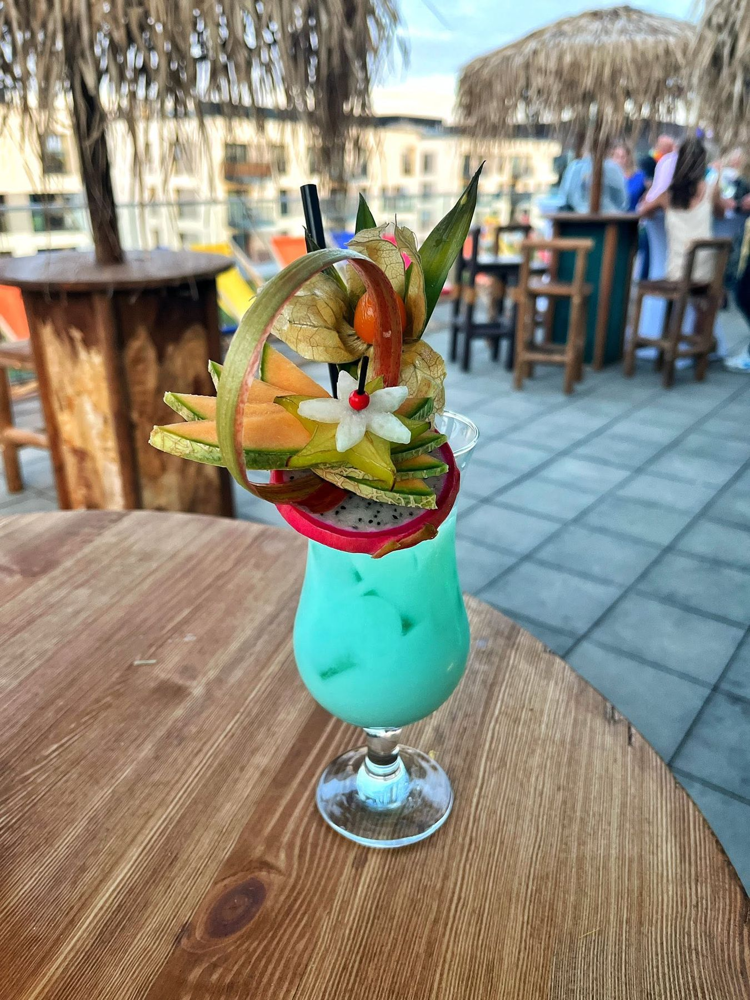
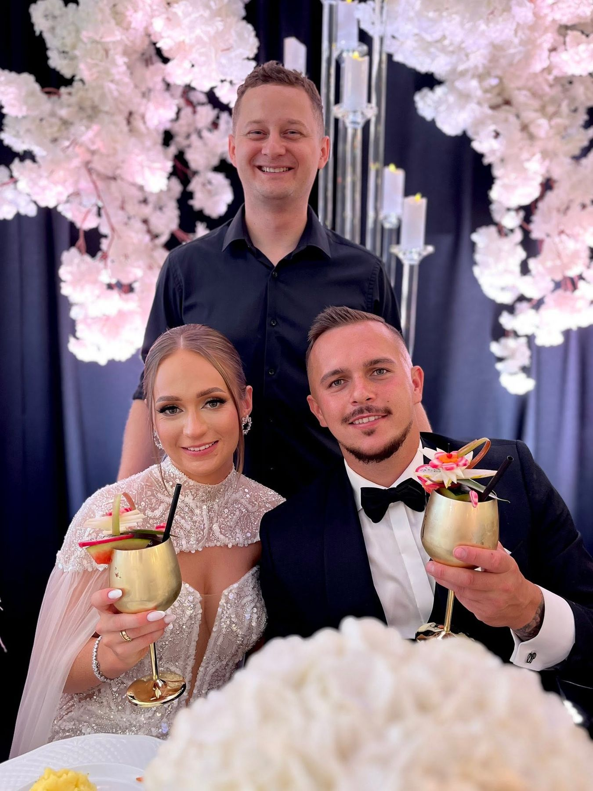

Celebruj chwile z profesjonalnym barem
Barman na weseledrink bar
Mobilny bar, autorskie koktajle i barmani z pasją — sprawimy, że Twoje wesele lub event zapamiętają wszyscy goście.
O nas
12 lat za barem.
Ponad 1000 udanych imprez.
Jesteśmy zespołem doświadczonych barmanów, których łączy jedna pasja — tworzenie niezapomnianych koktajli.
Od 12 lat jako Pyk Łyk tworzymy niezapomniane koktajle i wyjątkową atmosferę. Zapewniamy profesjonalną obsługę barmańską na weselach i eventach, działając głównie na terenie województw: mazowieckiego, lubelskiego i łódzkiego.
Pracujemy w pełni kompleksowo – po Twojej stronie zostaje jedynie przygotowanie 3–5 litrów czystej wódki. Całą logistyką (od zakupów, przez szkło, lód, dopasowane dekoracje, aż po sprzątanie) zajmujemy się my. Dysponujemy kilkoma doświadczonymi ekipami, co gwarantuje pełną niezawodność, nawet przy wielu realizacjach jednego dnia.
Co nas wyróżnia?
- Kompleksowość: My organizujemy bar, Ty cieszysz się imprezą.
- Wizualny zachwyt: Autorskie menu i pięknie udekorowane, przyciągające wzrok drinki.
- Pewność: Rozbudowany zespół gotowy do działania.


Nasza oferta
Kompleksowa obsługa — zajmujemy się wszystkim
Jeden pakiet, a w nim wszystko, czego potrzeba, by bar działał bez zarzutu od pierwszego do ostatniego drinka.
Welcome drink dla Pary Młodej
W prezencie od firmy przygotowujemy dla Pary Młodej wyjątkowy welcome drink
Cena zależy głównie od liczby gości i terminu. Obsługa barmańska jest wliczona w cenę.
To tylko punkt wyjścia — ofertę w pełni personalizujemy pod Twoje oczekiwania. Jesteśmy elastyczni i zawsze gotowi dopasować się w 100%.
Przejdź do kalkulatora wycenyRealizacje
Chwile, które stworzyliśmy
Opinie
Zaufało nam ponad 1000 par i firm
Zweryfikowane opinie w serwisie Wesele z Klasą potwierdzają średnią 5,00/5 przy 47 recenzjach, a dodatkowe rekomendacje klientów znajdziesz także na Facebooku.
Kontakt
Zapytaj o wolny termin
Wypełnij formularz — odezwiemy się z indywidualną wyceną. Wolisz porozmawiać? Zadzwoń, chętnie doradzimy.
Zadzwoń teraz513 595 540- Jarosław Wielgomas
- kontakt@pyklyk.pl
- Mazowieckie · Łódzkie · Lubelskie — do ok. 150 km od Warszawy